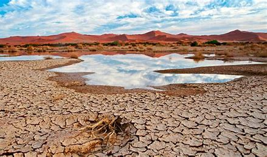

Agua Dulce y Salada
Aunque el planeta está cubierto de agua, solo el 2.5% es dulce y de ese porcentaje, gran parte está congelada en glaciares o en acuíferos subterráneos, dejando menos del 1% disponible para consumo humano.
Regiones con Escasez Hídrica
Regiones como el norte de África, Medio Oriente y partes de Asia enfrentan una grave escasez de agua. Esta situación afecta tanto al desarrollo humano como al equilibrio ambiental.
Infografía Interactiva
Descubre la distribución del agua en los continentes: